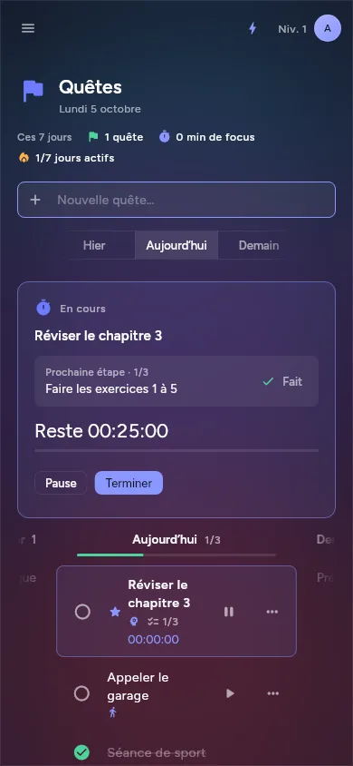

Case study · 01
Nirvix
Build your character: an RPG-style life app where every finished quest levels up one of six character stats. Local-first, on Linux and Android.


01 — Problem
Lists don't make me move
To-do apps never stuck for me, but game quests always did. Nirvix turns the day into quests: finishing one earns XP for a stat (sport, cooking, intelligence, social, active life, entertainment), and the character levels up through seven ranks.
The bar for "done" was set before any code: it has to be useful every day, work offline, and never punish. No red, no lost XP, no streak reset to zero; there is always a way out: later, split it, or let it go.
02 — Architecture
Rules in pure Dart
app/
Flutter UI
Rendering only: screens, themes, notifications.
packages/core
Rules
Pure Dart, no Flutter import: XP, ranks, quests, nutrition. Written test-first.
packages/storage
SQLite
drift with full-text search, an append-only operation log, daily backups, JSON and CSV export.
- Level and XP are derived from an append-only event log, never stored twice.
- Domain lists (sport, reading, watchlist, cooking…) are declared as data: one generic screen renders them all.
- Sync (Syncthing) and AI suggestions are optional add-ons behind interfaces; the app is complete offline.
03 — Who did what
AI drafts, I decide
Claude Code
- Wrote most of the Dart code from my specs, test-first on the rules package.
- Generated the widget tests and the screenshot goldens I review after every visual change.
- Drafted the docs: architecture, game design and the iteration log.
Me
- Set the rules that never bend: local-first, business logic only in core, no guilt mechanics.
- Cut Rust out of version 1 to keep one language and one toolchain.
- Ran the user-test iterations and chose what stayed: daily priorities, steps, focus timer, quick add.
04 — Results
What came out
- 336
- automated tests (rules, storage, widgets)
- 10
- domain pages from one generic screen
- 2
- platforms from one code base: Linux and Android
Keeping every rule in a package with no UI import keeps the tests fast and leaves the screens free to change. Next: the domain pages move from Dart declarations to JSON specs, so new pages can be added without new code.
Next